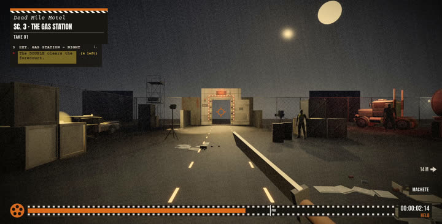
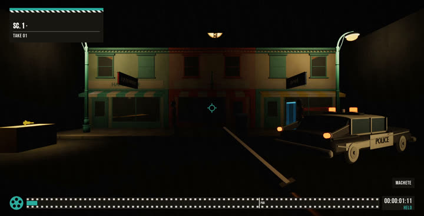

The details: ten shots of the sets, up close
In the 17:30 filming block the engine pointed the camera at props instead of gameplay: the stage door lighting up, pumps, posters, a lead zombie. Half the shots worked; the rest show how blind the script is.
Day 2, Fri 13 NovHour 38
Most of what the engine films is the loop: run the level, cut, replay. At 17:30 it did something different. Each level got a list of things to look at: a pump, a poster, a dumpster, the stage door, each enemy from a few metres in front. The engine drove the camera there by coordinates and recorded a few seconds of each.
None of this was modelled in a 3D package. The sets are built by kit scripts, and the art pass this afternoon dressed them with posters, decals and props, also by script.

The stage door from down the lot: crates, a red truck, a full moon, and a zombie in silhouette. The same door at six metres, with its bulb-lined EXIT frame.
The same door at six metres, with its bulb-lined EXIT frame. A forecourt pump up close, with a zombie walking past.
A forecourt pump up close, with a zombie walking past. The EATS front on the gas station, a light stand and an oil drum left on set.
The EATS front on the gas station, a light stand and an oil drum left on set. Behind the building: dumpster, bin bags and a motel poster.
Behind the building: dumpster, bin bags and a motel poster.
The finale's street: two storeys of shopfronts and a police car under the lamps. Noir 02 in black and white: glass roof lights, silos and a figure waiting in the yard.
Noir 02 in black and white: glass roof lights, silos and a figure waiting in the yard.


What the script couldn't see
The camera goes where the numbers say, and nothing checks what's in front of it. Of twenty-two shots, a reviewer passed about half. The rest:
- the UFO 02 barn shot is a purple wall at point-blank range
- one finale shot sits inside a street lamp
- the barrel in Zombie 01 is hidden behind a pillar
- the zombie shambler and the alien officer were never framed at all
- the aliens and two noir rooms blow out to white under their lights
The white blow-outs were already with the World session (the dance floor light in Noir 01). The rest is a lesson for the next detail list: give each shot a target to look at, not just a spot to stand on. The replay cameras got the same rule at 17:54, from the second Gameplay session: every shot has to see the double, or it cuts to one that does.